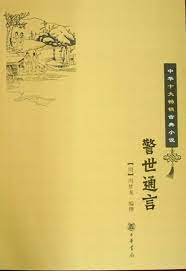

第四十卷旌阳宫铁树镇妖(1)
第四十卷旌阳宫铁树镇妖(1)#

春到人间景色新，桃红李白柳条青。
香车宝马闲来往，引却东风入禁城。
酾剩酒，豁吟情，顿教忘却利和名。
豪来试说当年事，犹记旌阳伏水精。
粤自混沌初辟，民物始生，中间有三个大圣人，为三教之祖。三教是甚么教？一是儒家，乃孔夫子，删述《六经》，垂宪万世，为历代帝王之师，万世文章之祖。这是一教。一是释家，是西方释迦牟尼佛祖，当时生在舍卫国刹利王家，放大智光明，照十方世界，地涌金莲华，丈六金身，能变能化，无大无不大，无通无不通，普度众生，号作天人师。这又是一教。一是道家，是太上老君，乃元气之祖，生天生地，生佛生仙，号铁师元炀上帝。他化身周历尘沙，也不可计数。至商汤王四十八年，又来出世，乘太阳日精，化为弹丸，流入玉女口中。玉女吞之，遂觉有孕。怀胎八十一年，直到武丁九年，破胁而生，生下地时，须发就白，人呼为老子。老子生在李树下，因指李为姓，名耳，字阳伯。后骑着青牛出函谷关。把关吏尹喜望见紫气，知是异人，求得《道德真经》共三千言，传留于世。老子入流沙修炼成仙，今居太清仙境，称为道德天尊。这又是一教。
那三教之中，惟老君为道祖，居于太清仙境。彩云缭绕，瑞气氤氲。一日是寿诞之辰，群三十三天天宫，并终南山、蓬菜山、阆苑山等处，三十六洞天，七十二福地，列位神仙，千千万万，或跨彩鸾，或骑白鹤，或驭赤龙，或驾丹凤，皆飘飘然乘云而至。次第朝贺，献上寿词，稽首作礼。词名《水龙吟》：红云紫盖葳蕤，仙宫浑是阳春候。玄鹤来时，青牛过处，彩云依旧。寿诞宏开，喜《道德》五千言，流传万古不朽。况是天上仙筵，献珍果人间未有。巨枣如瓜，与着万岁冰桃，千年碧藕。比乾坤永劫无休，举沧海为真仙寿。
彼时老君见群臣赞贺，大展仙颜，即设宴相待。酒至半酣，忽太白金星越席言曰：“众仙长知南瞻部洲江西省之事乎？
江西分野，旧属豫章。其地四百年后，当有蛟蜃为妖，无人降伏，千百里之地，必化成中洋之海也。”老君曰：“吾已知之。江西四百年后，有地名曰西山，龙盘虎踞，水绕山环，当出异人，姓许名逊，可为群仙领袖，殄灭妖邪。今必须一仙下凡，择世人德行浑全者，传以道法，使他日许逊降生，有传授渊源耳。”斗中一仙，乃孝悌王姓卫名弘康字伯冲，出曰：“某观下凡有兰期者，素行不疚，兼有仙风道骨，可传以妙道。
更令付此道与女真谌母，谌母付此道于许逊。口口相承，心心相契，使他日真仙有所传授，江西不至沉没，诸仙以为何如？”老君曰：“善哉，善哉！”众仙即送孝悌王至焰摩天中，通明殿下，将此事奏闻玉帝。玉帝允奏，即命直殿仙官，将神书玉旨付与孝悌王领讫。孝悌王辞别众仙，蹑起祥云，顷刻之间，到阎浮世界来了。
却说前汉有一人姓兰名期字子约，本贯f贾萸废馗咂*乡九原里人氏。历年二百，鹤发童颜。率其家百余口，精修孝行，以善化人，与物无忤。时人不敢呼其名，尽称为兰公。
彼时儿童谣云：“兰公兰公，上与天通。赤龙下迎，名列斗中。”
人知其必仙也。
一日，兰公凭几而坐。忽有一人，头戴逍遥巾，身披道袍，脚穿云履，手中拿一个鱼鼓简板儿，潇潇洒洒，徐步而来。兰公观其有仙家道气，慌忙下阶迎接。分宾坐定。茶毕，遂问：“仙翁高姓贵名？”答曰：“吾乃斗中之仙，孝悌王是也。
自上清下降，遨游人间。久闻先生精修孝行，故此相访。”兰公闻言，即低头拜曰：“贫老凡骨，勉修孝行，止可淑一身，不能率四海，有何功德，感动仙灵！”孝悌王遂以手扶起兰公曰：“居！吾语汝孝悌之旨。”兰公欠身起曰：“愿听指教！”
孝悌王曰：“始炁为大道于日中，是为‘孝仙王’。元炁为至道于月中，是为‘孝道明王’。玄炁为孝道于斗中，是为‘孝悌王’。夫孝至于天，日月为之明；孝至于地，万物为之生；孝至于民，王道为之成。是故舜、文至孝，凤凰来翔。姜诗、王祥，得鱼奉母。即此论之，上自天子，下至庶人，孝道所至，异类皆应。先生修养三世，行满功成，当得元炁于月中，而为孝道明王。四百年后，晋代有一真仙许逊出世，传吾孝道之宗，是为众仙之长，得始炁于日中，而为孝仙王也。
自是孝悌王悉将仙家妙诀，及金丹宝鉴、铜符铁券，并上清灵章、飞步斩邪之法，一一传授与兰公。又嘱道：“此道不可轻传，惟丹阳黄堂者，有一女真谌母，德性纯全，汝可传之。
可令谌母传授与晋代学仙童子许逊，许逊复传吴猛诸徒，则渊源有自，超凡入圣者，不患无门矣。”孝悌王言罢，足起祥云，冲宵而去。兰公拜而送之。自此以后，将金符铁券秘诀逐一参悟，遂择地修炼仙丹。其法云：黑铅天之精，白金地之髓，黑隐水中阳，白有火之炁。黑白往来蟠，阴阳归正位，二物俱含性，丹经号同类。黑以白为天，白以黑为地，阴阳混沌时，朵朵金莲翠。宝月满丹田，霞光照灵慧，休闭通天窍，莫泄混元气。精奇口诀功，火侯文武意，凡中养圣孙，万般只此贵。一日生一男，男男各有配。
兰公炼丹已成，举家服之，老者发白反黑，少者辟谷无饥。远近闻之，皆知其必飞升上清也。
时有火龙者，系洋子江中孽畜，神通广大。知得兰公成道，法教流传，后来子孙必遭歼灭。乃率领鼋帅虾兵蟹将，统领党类，一齐奔出潮头，将兰公宅上团团围住，喊杀连天。兰公听得，不知灾从何来，开门一看，好惊人哩！但见：一片黑烟，万团烈火，却是红孩儿身中四十八万毛孔，一齐迸出；又是华光将手里三十六块金砖，一并烧挥。咸阳遇之，烽焰三月不绝；昆山遇之，玉石一旦俱焚。疑年少周郎“赤壁鏖战”，似智谋诸葛“博望烧屯”。
那火，也不是天火，也不是地火，也不是人火，也不是鬼火，也不是雷公霹雳火，却是那洋子江中一个火龙吐出来的。惊得兰公家人，叫苦不迭。兰公知是火龙为害，问曰：“你这孳畜无故火攻我家，却待怎的？”孽龙道：“我只问你取金丹宝鉴、铜符铁券并灵章等事。你若献我，万事皆休；不然，烧得你一门尽绝！”兰公曰：“金丹宝鉴等乃斗中孝悌王所授，我怎肯胡乱与你？”只见那火光中，闪出一员鼋帅，形容古怪，背负团牌，扬威耀武。兰公睁仙眼一看，原来是个鼋鼍，却不在意下。又有那虾兵乱跳，蟹将横行，一个个身披甲胄，手执钢叉。兰公又举仙眼一看，原来都是虾蟹之属，转不着意了。遂剪下一个中指甲来，约有三寸多长，呵了一口仙气，念动真言，化作个三尺宝剑。有歌为证：非钢非铁体质坚，化成宝剑光凛然。不须锻炼洪炉烟，稜稜杀气欺龙泉。光芒颜色如霜雪，见者咨嗟叹奇绝。琉璃宝匣吐莲花，查镂金环生明月。此剑神仙流金精，干将莫邪难比伦。闪闪烁烁青蛇子，重重片片绿龟鳞。腾出寒光逼星斗，响声一似苍龙吼。今朝挥向烈炎中，不识蛟螭敢当否？
兰公将所化宝剑望空掷起，那剑刮喇喇，就似翻身样子一般，飞入火焰之中。左一衡右一击，左一挑右一剔，左一砍右一劈，那些孽怪如何当抵得住！只见鼋帅遇着缩头缩脑，负一面团牌急走。他却走在那里？直走在峡江口深岩里躲避，至今尚不敢出头哩。那虾兵遇着，拖着两个钢叉连跳连跳。他却走在那里？直走在洛阳桥下石缝子里面藏身，至今腰也不敢伸哩。那蟹将遇着，虽有全身坚甲，不能济事，也拖着两个钢叉横走直走。他须有八只脚儿更走不动，却被“扑砻松”宝剑一劈，分为两半。你看他腹中不红不白不黄不黑，似脓却不是脓，似血却不是血，遍地上滚将出来，真个是：但将冷眼观螃蟹，看你横行得几时？
那火龙自知兰公法大，难以当抵，叹曰：“‘儿孙自有儿孙福。’我后来子孙，福来由他去享，祸来由他去当，我管他则甚？”遂奔入洋子江中万丈深潭底藏身去了。自是兰公举家数十口拔宅升天，玉帝封兰公为孝明王，不在话下。
却说金陵丹阳郡，地名黄堂，有一女真字曰婴。潜通至道，忘其甲子，不知几百年岁。乡人累世见之，齿发不衰，皆以谌母呼之。一日偶过市上，见一小儿伏地悲哭，问其来历，说：“父母避乱而来，弃之于此。”谌母怜其孤苦，遂收归抚育。渐已长成，教他读书，聪明出众，天文地理，无所不通。
有东邻耆老，欲以女娶之，谌母问儿允否？儿告曰：“儿非浮世之人，乃月中孝道明王，领斗中孝悌王仙旨，教我传道与母。今此化身为儿，度脱我母，何必更议婚姻！但可高建仙坛，传付此道，使我母飞升上清也。”谌母闻得此言，且惊且喜，遂于黄堂建立坛宇，大阐孝悌王之教。谌母已得修真之诀，于是孝明王仍以孝悌王所授金丹宝鉴、钢符铁券灵章，及正一斩邪三五飞步之术，悉传与谌母。谌母乃谓孝明王曰：“论昔日恩情，我为母，君为子；论今日传授，君为师，我为徒。”遂欲下拜。孝明王曰：“只论子母，莫论师徒。”乃不受其拜，惟嘱之曰：“此道宜深秘，不可轻泄。后世晋代有二人学仙，一名许逊，一名吴猛，二人皆名登仙籍。惟许逊得传此道。按《玉皇玄谱》仙籍品秩，吴猛位居元郡御史。许逊位居都仙大使兼高明太史，总领仙部，是为众仙之长。老母可将此道传与许逊，又着许逊传与吴猛，庶品秩不紊矣。”明王言罢，拜辞老母，飞腾太空而去。有诗为证：
出入无车只驾云，尘凡自是不同群。
明王恐绝仙家术，告戒叮咛度后人。
却说汉灵帝时十常侍用事，忠良党锢，谗谄横行，毒流四海，万民嗟怨。那怨气感动了上苍，降下两场大灾，久雨之后，又是久旱。那雨整整的下了五个月，直落得江湖满目，厨灶无烟。及至水退了，又经年不雨，莫说是禾苗槁死，就是草木也干枯了。可怜那一时的百姓，吃早膳先愁晚膳，缝夏衣便作冬衣。正是朝有奸臣野有贼，地无荒草树无皮。壮者散于四方，老者死于沟壑。时许都有一人姓许名琰字汝玉，乃颖阳许田之后。为人慈仁，深明医道，擢太医院医官。感饥荒之岁，乃罄其家资，置丸药数百斛，名曰“救饥丹”，散与四方食之。每食一丸，可饱四十余日。饥民赖以不死者甚众。至献帝初平年间，黄巾贼起，天下大乱，许都又遭大荒，斗米千钱，人人菜色，个个鹄形。时许琰已故，其子许肃，家尚丰盈，将自己仓谷尽数周给各乡，遂挈家避乱江南，择居豫章之南昌。有鉴察神将许氏世代积善，奏知玉帝：“若不厚报，无以劝善！”玉帝准奏，即仰殿前掌判仙官，将《玄谱》仙籍品秩，逐一查检，看有何仙轮当下世？仙官检看毕，奏曰：“晋代江南，当出一孽龙精，扰害良民，生养蛟党繁盛。
今轮系玉洞天仙降世，传受女真谌母飞步斩邪之法，斩灭蛟党以除民害。”玉帝闻奏，即降旨，宣取玉洞天仙，令他身变金凤，口衔宝珠，下降许肃家投胎。有诗为证：
御殿亲传玉帝书，祥云蔼蔼凤衔珠。
试看凡子生仙种，积善之家庆有余。
却说吴赤乌二年三月，许肃妻何氏夜得一梦。梦见一只金凤飞降庭前，口内衔珠，坠在何氏掌中。何氏喜而玩之，含于口中，不觉溜下肚子去了，因而有孕。许肃一则以喜，一则以惧。喜的是年过三十无嗣，今幸有孕；惧的是何氏自来不曾生育，恐临产艰难。那广润门有个占卦先生，混名“鬼推”，决断如神。不免去问他个吉凶，或男或女，看他如何？
许肃整顿衣帽，竟望广润门来。只见那先生忙忙的，占了又断，断了又占，拨不开的人头，移不动脚步。许员外站得个腿儿酸麻，还轮他不上，只得叫上一声：“鬼推先生！”那先生听知叫了他的混名，只说是个旧相识，连忙的说道：“请进请进。”许员外把两只手排开了众人，方才挨得进去。相见礼毕，许员外道：“小人许肃敬来问个六甲，生男生女，或吉或凶，请先生指教。”那先生就添上一炷香，唱上一个喏，口念四句：
虔叩六丁神，文王卦有灵。
吉凶含万象，切莫顺人情。
通陈了姓名意旨，把铜钱掷了六掷，占得个“地天泰”卦。
先生道：“恭喜，好一个男喜。”遂批上几句云：
福德临身旺，青龙把世持。
秋风生桂子，坐草却无虞。
许员外闻言甚喜，收了卦书，遂将几十文钱谢了先生。回去对浑家说了，何氏心亦少稳。光阴似箭，忽到八月十五中秋，其夜天朗气清，现出一轮明月，皎洁无翳。许员外与何氏玩赏，贪看了一会，不觉二更将尽，三鼓初传。忽然月华散彩，半空中仙音嘹亮，何氏只一阵腹痛，产下个孩儿，异香满室，红光照人。真个是：五色云中呈鸑鷟，九重天上送麒麟。
次早邻居都来贺喜，所生即真君也。形端骨秀，颖悟过人。年甫三岁，即知礼让。父母乃取名逊，字敬之。年十岁，从师读书，一目十行俱下，作文写字，不教自会，世俗无有能为之师者。真君遂弃书不读，慕修养学仙之法，却没有师传，心常切切。
忽一日，有一人姓胡名云字子元，自幼与真君同窗，情好甚密，别真君日久，特来相访。真君倒屣趋迎，握手话旧。
子元见真君谈吐间有驰慕神仙之见意，乃曰：“老兄少年高才，乃欲为云外客乎？”真君曰：“惶愧，自思百年旦暮，欲求出世之方，恨未得明师指示。”子元曰：“兄言正合我意，往者因访道友云阳詹曕先生，言及西宁州有一人，姓吴名猛字世云，曾举孝廉，仕吴为洛阳令。后弃职而归，得传异人丁义神方，日以修炼为事。又闻南海太守鲍靓有道德，往师事之，得其秘法。回至豫章，江中风涛大作，乃取所执白羽扇画水成路，徐行而渡。渡毕，路复为水。观者大骇。于是道术盛行，弟子相从者甚众。区区每欲拜投，奈母老不敢远离。兄若不惜劳苦，可往师之。”真君闻言，大喜曰：“多谢指教！”
真君待子元别去，即拜辞父母，收拾行李，竟投西宁，寻访吴君。有诗赞曰：无影无形仙路难，未经师授莫跻攀。
胡君幸赐吹嘘力，打破玄元第一关。
话说真君一念投师，辞不得路途辛苦。不一日得到吴君之门，写一个门生拜帖，央道童通报。吴君看是“豫章门生许逊”，大惊曰：“此人乃有道之士！”即出门迎接。此时吴君年九十一岁，真君年四十一岁，真君不敢当客礼，口称：“仙丈，愿受业于门下。”吴君曰：“小老粗通道术，焉能为人之师？但先生此来，当尽剖露，岂敢自私？亦不敢以先生在弟子列也。”自此每称真君为“许先生”，敬如宾友。真君亦尊吴君而不敢自居。
一日二人坐清虚堂，共谈神仙之事。真君问曰：“人之有生必有死，乃古今定理。吾见有壮而不老，生而不死者，不知何道可致？”吴君曰：“人之有生，自父母交姤，二气相合，阴承阳生，气随胎化。三百日形圆，灵光入体，与母分离。五千日气足，是为十五童男。此时阴中阳半，可以比东日之光。
过此以往，不知修养，则走失元阳，耗散真气，气弱则有病老死苦之患。”真君曰：“病老死苦，将何却之？”吴君曰：“人生所免病老死苦，在人中修仙，仙中升天耳。”真君曰：“人死为鬼，道成为仙，仙中升天者，何也？”吴君曰：“纯阴而无阳者，鬼也；纯阳而无阴者，仙也；阴阳相离者，人也。
惟人可以为仙，可以为鬼。仙有五等，法有三成，持修在人而已。”真君曰：“何谓法有三成，仙有五等？”吴君曰：“法有三成者：小成、中成、大成。仙有五等者：鬼仙、人仙、地仙、神仙、天仙。所谓鬼仙者，少年不修，恣情纵欲，形如枯木，心若死灰，以致病死，阴灵不散，成精作怪，故曰鬼仙。鬼仙不离于鬼也。所谓人仙者，修真之士，不悟大道，惟小用其功。绝五味者，岂知有六气？忘七情者，岂知有十戒？
行嗽咽者，哂吐纳之为错；著采补者，笑清净以为愚。采阴取妇人之气者，与缩金龟者不同；盖阳食女子之乳者，与炼金丹不同。此等之流，止是于大道中得一法一术成功，但能安乐延寿而已，故曰人仙。人仙不离于人也。所谓地仙者，天仙之半，神仙之中，亦止小成之法。识坎离之交配，悟龙虎之飞腾，炼成丹药，得以长生住世，故曰地仙。地仙不离于地也。所谓神仙者，以地仙厌居尘世，得中成之法，抽铅添汞，金精炼顶，玉液还丹，五气朝元，三阳聚顶，功满忘形，胎生自化，阴尽阳纯，身外有身，脱质成仙，超凡入圣，谢绝尘世，以归三岛，故曰神仙。神仙不离于神也。所谓天仙者，以神仙厌居三岛，得大成之法，内外丹成，道上有功，人间有行，功行满足。授天书以返洞天，是曰天仙。天仙不离于天也。然修仙之要，炼丹为急。吾有《洞仙歌》二十二首，君宜谨记之：
丹之始，无上元君授圣主。法出先天五太初，遇元修炼身冲举。
丹之祖，生育三才运今古。隐在鄱湖山泽间，志士采来作丹母。
丹之父，晓来飞上扶桑树。万道霞光照太虚，调和兔髓可烹煮。
丹之母，金晶莹洁夜三五。乌兔搏搦不终朝，炼成大药世无比。
丹之胎，鸟肝兔髓毓真胚。一水三汞三砂质，四五三成明自来。
丹之兆，三日结胎方入妙。万丈红光贯斗牛，五音六律随时奏。
丹之质，红紫光明人莫识。元自虚无黍米珠，色即是空空即色。
丹之灵，十月脱胎丹始成。一粒一服百日足，改换形骨身长生。
丹之圣，九年炼就五霞鼎。药力如添水火功，枯骨立起孤魂醒。
丹之室，上弦七分下弦八。中虚一寸号明堂。产出灵苗成金液。
丹之釜，恒廓坛炉须坚固。内外护持水火金，日丁金胎产盘古。
丹之灶，鼎曲相通似蓬岛。上安垣廓护金炉，立炼龙膏并虎脑。
丹之火，一日时辰十二个。文兮武兮要合宜，抽添进退莫太过。
丹之水，器凭胜负斯为美。不潮不滥致中和，溢产灵苗吐金蕊。
丹之威，红光耿耿冲紫薇。七星灿灿三台烂，天丁地甲皆皈依。
丹之窍，天地人兮各有奥。紫薇嶽渎及明君，三界精灵皈至道。
丹之彩，依方逐位安排派。青红赤白黄居中，摄瑞招祥神自在。
丹之用，真土真铅与真汞。黑中取白赤中青，全凭水火静中动。
丹之融，阴阳配合在雌雄。龙精虎髓鼎中烹，造化抽添火候功。
丹之理，龙膏虎髓灵无比。二家交s煡仗黄精，屯蒙进退全终始。
丹之瑞，小无其内大无外。放弥六合退藏密，三界收来黍珠内。
丹之完，玉皇捧禄要天缘。等闲岂许凡人泄，万劫之中始一传。”
真君曰：“多谢指述！敢问仙丈，五仙之中，已造到何仙地位？”吴君曰：“小老山野愚蒙，功行殊欠，不过得小成之功，而为地仙耳。若于神仙天仙，虽知门路，无力可攀。”遂将烧炼秘诀并白云符书，悉传与真君。真君顿首拜谢，相辞而归。
回至家中，厌居闹市，欲寻名山胜地，以为栖身之所。闻知汝南有一人，姓郭名璞字景纯，明阴阳风水之道，遨游江湖。真君敬访之。璞一日早起，见鸦从东南而鸣，遂占一课，断曰：“今日午时，当有一仙客许姓者，到我家中，欲问择居之事。”至日中，家童果报客至。璞慌忙出迎，礼罢，分宾而坐。璞问曰：“先生非许姓，为卜居而来乎？”真君曰：“公何以知之？”璞曰：“某今早卜卦如此，未知然否？”真君曰：“诚然。”因自叙姓名，并道卜居之意。璞曰：“先生仪容秀伟，骨骼清奇，非尘中人物。富贵之地，不足居先生。居先生者，其神仙之地乎？”真君曰：“昔吕洞宾居庐山而成仙，鬼谷子居云梦而得道，今或无此吉地么？”璞曰：“有，但当遍历耳。”
于是命童仆收拾行囊，与真君同游江南诸郡，采访名山。
一日行至庐山，璞曰：“此山嵯峨雄壮，湖水还东，紫云盖顶，累代产升仙之士。但山形属土，先生姓许，羽音属水，水土相克，不宜居也。但作往来游寓之所，则可矣。”又行至饶州鄱阳，地名傍湖，璞曰：“此傍湖富贵大地，但非先生所居。”真君曰：“此地气乘风散，安得拟太富贵耶？”璞曰：“相地之法，道眼为上，法眼次之。道眼者，凭目力之巧，以察山河形势；法眼者，执天星河图紫薇等法，以定山川。吉凶富贵之地，天地所秘，神物所护，苟非其人，见而不见。俗云‘福地留与福人来’，正谓此也。”真君曰：“今有此等好地，先生何不留一记，以为他日之验？”郭璞乃题诗一首为记，云：
行尽江南数百州，惟有傍湖山石牛。
雁鹅夜夜鸣更鼓，鱼鳖朝朝拜冕旒。
离龙隐隐居乾位，巽水滔滔入艮流。
后代福人来遇此，富贵绵绵八百秋。
许、郭二人离了鄱阳，又行至宜春栖梧山下，有一人姓王名朔，亦善通五行历数之书。见许、郭二人登山采地，料必异人，遂迎至其家。询姓名已毕，朔留二人宿于西亭，相待甚厚。真君感其殷勤，乃告之曰：“子相貌非凡，可传吾术。”
遂密授修炼仙方。郭璞曰：“此居山水秀丽，宜为道院，以作养真之地。”王朔从其言，遂盖起道院，真君援笔大书“迎仙院”三字，以作牌额。王朔感戴不胜。二人相辞而去，遂行至洪都西山，地名金田，则见：嵯嵯峨峨的山势，突突兀兀的峰峦，活活泼泼的青龙，端端正正的白虎，圆圆净净的护沙，湾湾环环的朝水。山上有苍苍郁郁的虬髯美松，山下有翠翠青青的凤尾修竹，山前有软软柔柔的龙须嫩草，山后有古古怪怪的鹿角枯樟。也曾闻华华彩彩的鸾吟，也曾闻昂昂藏藏的鹤唳，也曾闻咆咆哮哮的虎啸，也曾闻呦呦诜诜的鹿鸣。这山呵！比浙之天台更生得奇奇绝绝，比闽之武夷更生得窕窕峣峣，比池之九华更生得迤迤遈遈，比蜀之峨眉更生得秀秀丽丽，比楚之武当更生得尖尖圆圆，比陕之终南更生得巧巧妙妙，比鲁之泰山更生得蜿蜿蜒蜒，比广之罗浮更生得苍苍奕奕。真个是天下无双胜境，江西第一名山。万古精英此处藏，分明是个神仙宅。
却说郭璞先生行到山麓之下，前观后察，左顾右盼，遂将罗经下针，审了方向，抚掌大笑曰：“璞相地多矣，未有如此之妙！若求富贵，则有起歇；如欲栖隐，大合仙格。观其冈阜厚圆，位坐深邃，三峰壁立，四环云拱，内外勾锁，无不合宜。大凡相地，兼相其人，观君表里，正与地符。且西山属金，以五音论之，先生之姓，羽音属水，金能生水，合得长生之局，舍此无他往也。但不知此地谁人为主？”傍有一樵夫指曰：“此地乃金长者之业。”真君曰：“既称长者，必是善人。”
二人迳造其家。金公欣然出迎，欢若平生。金公问曰：“二位仙客，从何而至？”郭璞曰：“小子姓郭名璞：略晓阴阳之术。因此位道友姓许名逊，欲求栖隐之地。偶采宝庄，正合仙格，欲置一舍，以为修炼之所。不知尊翁肯慨诺否？”金公曰：“第恐此地褊小，不足以处许君；如不弃，并寒庄薄地数亩悉当相赠。”真君曰：“愿订价多少？惟命是从。”金公曰：“大丈夫一言，万金不易。愚老拙直，平生不立文券。”乃与真君索大钱一文，中破之，自收其半，一半付还真君。真君叩头拜谢。三人分别而去。于是真君辞了郭璞，择取吉日，挈家父母妻子，凡数十口，徙于西山，筑室而居焉。金公后封为地主真官。金氏之宅，即今玉隆万寿宫是也。却说真君日以修炼为事，炼就金丹，用之可以点石为金，服之可以却老延年。于是周济贫乏，德义彰播。
时晋武帝西平蜀，东取吴，天下一统，建元太康。从吏部尚书山涛之奏，诏各郡保举孝廉贤能之士。豫章郡太守范宁，见真君孝养二亲，雍睦乡里，轻财利物，即保举真君为孝廉。武帝遣使臣束帛赍诏，取真君为蜀郡旌阳县令。真君以父母年老，不忍远离，上表辞职。武帝不允，命本郡守催迫上任。捱至次年，真君不得已辞别父母妻子，只得起程。真君有二姊，长姊事南昌眄君，夫早丧，遗下一子眄烈字道微，事母至孝。真君虑其姊孀居无倚，遂筑室于宅之西，奉姊居之，于是母子得闻妙道，真君临行，谓姊曰：“吾父母年迈，妻子尚不知世务，贤姊当代弟掌治家事。如有仙翁隐客相过者，可以礼貌相待。汝子眄烈，吾嘉其有仁孝之风，使与我同往任所。”眄母曰：“贤弟好去为官，家下一应事体为姊的担当，不劳远念。”
言未毕，忽有一少年上堂，长揖言曰：“吾与眄烈哥哥，皆外甥也。何独与眄兄同行，而不及我？”真君视其人，乃次姊之子，复姓钟离名嘉字公阳，新建县象牙山西里人也。父母俱早丧，自幼依于真君。为人气象恢弘，德性温雅，至是欲与真君同行。真君许之。于是二甥得薰陶之力，神仙器量，从此以立。真君又呼其妻周夫人告之曰：“我本无心功名，奈朝廷屡聘，若不奉行，恐抗君命。自古忠孝不能两全。二亲老迈，汝当朝夕侍奉，调护寒暑，克尽汝子妇之道！且儿女少幼，须不时教训，勤以治家，俭以节用，此是汝当然事也。”
周夫人答曰：“谨领教！”言毕，拜别而行，不在话下。
话说真君未到任之初，蜀中饥荒，民贫不能纳租；真君到任，上官督责甚严，真君乃以灵丹点瓦石为金，暗使人埋于县衙后圃。一旦拘集贫民未纳租者，尽至阶下，真君问曰：“朝廷粮税，汝等缘何不纳？”贫民告曰：“输纳国税，乃理之常，岂敢不遵？奈因饥荒，不能纳尔。”真君曰：“既如此，吾罚汝等在于县衙后圃，开凿池塘，以作工数，倘有所得，即来完纳。”民皆大喜，即往后圃开凿池塘，遂皆拾得黄金，都来完纳，百姓遂免流移之苦。邻郡闻风者，皆来依附，遂至户口增益。按《一统志》旌阳县属汉州，真君飞升后，改为德阳，以表真君之德及民也。其地赖真君点金，故至今尚富，这话休题。那时民间又患瘟疫，死者无数，真君符咒所及，即时痊愈。又怜他郡病民，乃插竹为标，置于四境溪上，焚符其中，使病者就而饮之，无不痊可。其老幼妇瘦羸不能自至者，令人汲水归家饮之，亦复安痊。郡人有诗赞曰：
百里桑麻知善政，万家烟井沐仁风。
明悬藻鉴秋阳暴，清逼冰壶夜月溶。
符置江滨驱痼病，金埋县圃起民穷。
真君德泽于今在，庙祀巍巍报厥功。
却说成都府有一人，姓陈名勋字孝举。因举孝廉，官居益州别驾。闻真君传授吴猛道法，今治旌阳，恩及百姓，遂来拜谒，愿投案下充为书吏，使朝夕得领玄教。真君见其人气清色润，遂付以吏职。既而见勋有道骨，乃引勋居门下为弟子，看守药炉。又有一人姓周名广字惠常，庐陵人也，乃吴都督周瑜之后。游巴蜀云台山，粗得汉天师驱精斩邪之法。
至是闻真君深得仙道，特至旌阳县投拜真君为师，愿垂教训。
真君纳之，职掌雷坛。二人自是得闻仙道之妙。真君任旌阳既久，弟子渐众，每因公余无事，与众弟子讲论道法。
却说晋朝承平既久，外有五胡强横，浊乱中原。那五胡？
匈奴刘渊居晋阳，羯戎石勒居上党，羌人姚弋仲居扶风，氐人符洪居临渭，鲜卑慕容廆居昌黎。
先是汉、魏以来，收服夷、狄，诸胡多居塞内。太子洗马江统劝武帝徙于边地，免后日夷、狄乱华之祸。武帝不听，至是果然侵乱晋朝。太子惠帝愚蠢，贾后横恣，杀戮大臣。真君乃谓弟子曰：“吾闻君子有道则见，无道则隐。”遂解官东归。百姓闻知，扳辕卧辙而留，泣声震地。真君亦泣下，谓其民曰：“吾非肯舍汝而去，奈今天下不久大乱，吾是以为保身之计。尔等子民，各务生业！”百姓不忍，送至百里之外，或数百里，又有送至家中不肯回者。真君至家，拜见父母妻子，合家相庆，喜不自胜。即于宅东空地结茅为屋，状如营垒，令蜀民居之。蜀民多改其氏族，从真君之姓，故号许氏营。
却说真君之妻周夫人对真君言：“女姑年长，当择佳配。”
真君曰：“吾久思在心矣。”遍观众弟子中，有一人姓黄名仁览字紫庭，建城人也。乃御史中丞黄辅之子。其人忠信纯笃，有受道之器。真君遂令弟子周广作媒。仁览禀于父母，择吉备礼，在真君宅上成婚。满月后，禀于真君同仙姑归家省亲。
仙姑克尽妇道，仁览分付其妻在家事奉公姑，复拜辞父母，敬从真君求仙学道。
却说吴真君猛时年一百二十余岁矣，闻知真君解绶归家，自西安来相访。真君整衣出迎，坐定叙阔，命筑室于宅西以居之。一日忽大风暴作，吴君即书一符，掷于屋上，须臾见有一青鸟衔去，其风顿息。真君问曰：“此风主何吉凶？”吴君曰：“南湖有一舟经过，忽遇此风，舟中有一道人呼天求救，吾以此止之。”不数日，有一人深衣大带，头戴幅巾，进门与二君施礼曰：“姓彭名抗，字武阳，兰陵人也。自少举孝廉，官至晋朝尚书左丞。因见天下将乱，托疾辞职。闻许先生施行德惠，参悟仙机，特来拜投为师。昨过南湖，偶遇狂风大作，舟几覆。吾乃呼天号救，俄有一青鸟飞来，其风顿息。今日得拜仙颜，实乃万幸！”真君即以吴君书符之事告之。彭抗拜谢不胜，遂挈家居豫章城中。既而见真君一子未婚，愿将女胜娘为配。真君从之。自后待彭抗以宾礼，尽以神仙秘术付之。东明子有诗云：
二品高官职匪轻，一朝抛却拜仙庭。
不因懿戚情相厚，彭老安能得上升？
此时真君传得吴猛道术，犹未传谌母飞步斩邪之法。有太白金星奏闻玉帝：“南昌郡孽龙将为民害，今有许逊原系玉洞真仙降世，应在此人收伏。望差天使赍赐斩妖神剑，付与许逊，助斩妖精，免使黎民遭害。”玉帝闻奏，即宣女童二人，将神剑二口，赍至地名柏林，献于许逊，宣上帝之命，教他斩魅除妖，济民救世。真君拜而受之，回顾女童，已飞升云端矣。后人有诗叹曰：
坚金烈火炼将成，削铁吹毛耀日明。
玉女捧来离紫府，江湖从此水流腥。
且说江南有一妖物，号曰“孽龙”。初生人世，为聪明才子，姓张名酷。因乘船渡江，偶值大风，其船遂覆。张酷溺于水中，彼时得附一木板，随水漂流，泊于沙滩之上。肚中正饿，忽见明珠一颗，取而吞之。那珠不是别的珠，乃是那火龙生下的卵。吞了这珠却不饿了，就在水中能游能泳。过了一月有余，脱胎换骨，遍身尽生鳞甲，止有一个头，还是人头。其后这个畜生只好在水中戏耍，或跳入三级巨浪，看鱼龙变化，或撞在万丈深潭，看虾鳖潜游。不想火龙见了，就认得是他儿子，嘘了一气，教以神通。那畜生走上岸来，即能千变万化，于是呼风作雨，握雾撩云。喜则化人形而淫人间之女子，怒则变精怪而兴陆地之波涛，或坏人屋舍，或食人精血，或覆人舟船，取人金珠，为人间大患。诞有六子，数十年间，生息蕃盛，约有千余。兼之族类蛟党甚多，常欲把江西数郡滚出一个大中海。
一日，真君炼丹于艾城之山，有蛟党辄兴洪水，欲漂流其丹室。真君大怒，即遣神兵擒之，钉于石壁，今钉蛟石犹在。又挥起宝剑，将一蛟斩讫。不想那孽龙知道，杀了他的党类，一呼百集，老老少少，大大小小，都打做一团儿。孽龙道：“许逊恁般可恶，欲诛吾党，不报此仇，生亦枉然！”内有一班孽畜，有叫孽龙做公公的，有叫做伯伯的，有叫做叔叔的，有叫做哥哥的，说道：“不消费心，等我们去把那许逊抓将来，碎尸万段，以泄其恨。”孽龙道：“闻得许逊传授了吴猛的法术，甚有本事，还要个有力量的去才好。”内有一长蛇精说道：“哥哥，等我去来。”孽龙道：“贤弟到去得。”于是长蛇精带了百十个蛟党，一齐冲奔许氏之宅，一字阵儿摆开，叫道：“许逊，敢与我比势么？”真君见是一伙蛟党，仗剑在手问云：“你这些孽畜，有甚本事，敢与我相比？”长蛇精道：“你听我说：
鳞甲棱层气势雄，神通会上显神通。
开喉一旦能吞象，伏气三年便化龙。
巨口张时偏作雾，高头昂处便呼风。
身长九万人知否，绕遍昆仑第一峰。”
长蛇精恃了本事，耀武扬威，众蛟党一齐踊跃，声声口口说道：“你不该杀了我家人，定不与你干休！”真君曰：“只怕你这些孽畜逃不过我手中宝剑。”那长蛇精就弄他本事，放出一阵大风，又只见：视之无影，听之有声，噫大块之怒号，传万窍之跳叫。一任他砰砰磅磅，栗栗烈烈，撼天阙，摇地轴，九天仙子也愁眉；那管他青青白白，红红黄黄，翻大海，搅长江，四海龙王同缩颈。雷轰轰，电闪闪，飞的是沙，走的是石，直恁的满眼尘霾春起早；云惨惨，雾腾腾，折也乔林，不也古木，说甚么前村灯火夜眠迟，忽喇喇前呼后叫，左奔右突，就是九重龙楼凤阁，也教他万瓦齐飞；吉都都横冲直撞，乱卷斜拖，即如千丈虎狼穴，难道是一毛不拔？
纵宗生之大志，不敢谓其乘之而浪破千层；虽列子之泠然，吾未见其御之而旬有五日。正是：
万里尘沙阴晦暝，几家门户响敲推。
多情折尽章台柳，底事掀开社屋茅？
真个好一阵大风也！真君按剑在手，叱曰：“风伯等神，好将此风息了！”须臾之间，那风寂然不动。谁知那些孽怪，又弄出一番大雨来：则见：石燕飞翔，商羊鼓舞。滂沱的云中泻下，就似倾盆；忽喇的空里注来，岂因救旱。逼逼剥剥，打过那园林焦叶，东一片，西一片，翠色阑珊；淋淋筛筛，滴得那池沼荷花，上一瓣，下一瓣，红妆零乱，沟面洪盈，倏忽间漂去高凤庭前麦；檐头长溜，须臾里洗却周武郊外兵。这不是鞭将蜥蜴，碧天上祈祷下的甘霖；这却是驱起鲸鲵，沧海中喷将来的唾沫。正是：
茅屋人家烟火冷，梨花庭院梦魂惊。
渠添浊水通鱼入，地秀苍苔滞鹤行。
真个好一阵大雨也！真君又按剑叱曰：“雨师等神，好将此雨止了！”那雨一霎时间半点儿也没了。真君乃大显法力，奔往长蛇精阵中，将两口宝剑挥起，把长蛇精挥为两段。那伙蛟党，见斩了蛇精，各自逃生。真君赶上，一概诛灭。迳往群蛟之所，寻取孽龙。
那孽龙闻得斩了蛇精，伤了许多党类，心里那肯干休！就呼集一党蛟精，约有千百之众，人多口多，骂着真君：“骚道，野道，你不合这等上门欺负人！”于是呼风的呼风，唤雨的唤雨，作雾的作雾，兴云的兴云，攫烟的攫烟，弄火的弄火，一齐奔向前来。真君将两口宝剑，左砍右斫，那蛟党多了，怎生收伏得尽？况真君此时未传得谌母飞腾之法，只是个陆地神仙。那孽龙到会变化，冲上云霄，就变成一个大鹰儿。真个：
爪似铜钉快利，嘴似铁钻坚刚。
展开双翅欲飞扬，好似大鹏模样。
云里叫时声大，林端立处头昂。
纷纷鸟雀尽潜藏，那个飞禽敢挡。
只见那鹰儿在半空展翅，忽喇地扑将下来，到把真君脸上挝了一下，挝得血流满面。真君忙挥剑斩时，那鹰又飞在半空中去了。真君没奈何，只得转回家中。那些蛟党见伤得性命多了，亦各自收阵回去。
却说真君见孽龙神通广大，敬来吴君处相访，求其破蛟之策。吴君曰：“孽龙久为民害，小老素有剪除之心。但恨道法未高，莫能取胜。汝今既擒蛟党，孽龙必然忿怒，愈加残害，江南休矣！”真君曰：“如此奈何？”吴君曰：“我近日闻得镇江府丹阳县，地名黄堂，有一女真谌母，深通道术。吾与汝同往师之，叩其妙道，然后除此妖物，未为晚也。”真君闻言大喜，遂整行囊与吴君共往黄堂，谒见谌母。谌母曰：“二公何人？到此有何见谕？”真君曰：“弟子许逊、吴猛。今因江南有一孽龙精，大为民害，吾二人有心殄灭，奈法术殊欠。久闻尊母道传无极，法演先天，迳来恳求，望指示仙诀，实乃平生之至愿也。”言讫，拜伏于地。谌母曰：“二公请起，听吾言之：君等乃夙禀奇骨，名在天府。昔者孝悌王自上清下降山东曲阜县兰公之家，谓兰公曰：‘后世晋代当出一神仙，姓许名逊，传吾至道，是为众仙之长。’遂留下金丹宝鉴、铜符铁券，并飞步斩邪之法，传与兰公。复令兰公传我，兰公又使我收掌，以待汝等，积有四百余年矣。子今既来，吾当传授于汝。”于是选择吉日，依科设仪，付出铜符铁券、金丹宝鉴，并正一斩邪之法，三五飞腾之术，及诸灵章秘诀，并各样符篆，悉以传诸许君。今净明法、五雷法之类，皆谌母所传也。谌母又谓吴君曰：“君昔者以神方为许君之师。今孝悌王之道，唯许君得传，汝当退而反师之也。”
真君传道已毕，将欲辞归。心中暗想：“今幸得闻谌母之教，每岁必当谒拜，以尽弟子之礼。”此意未形于言，谌母已先知矣，乃对真君曰：“我今还帝乡，子不必再来谒也。”乃取香茅一根，望南而掷，其茅随风飘然。谌母谓真君曰：“子于所居之南数十里，看香茅落于何处，其处立吾庙宇，每岁逢秋，一至吾庙足矣。”谌母言罢，空中忽有龙车凤辇来迎，谌母即凌空而去。其时吴、许二君望空拜送，即还本部。遂往寻飞茆之迹，行至西山之南四十里，觅得香茅，已丛生茂盛，二君遂于此地建立祠宇，亦以黄堂名之。令匠人塑谌母宝像，严奉香火，期以八月初三日必往朝谒。即今崇真观是也，朝谒之礼犹在。真君亦于黄堂立坛，悉依谌母之言，将此道法传授吴君。吴君反拜真君为师。自此二人始有飞腾变化之术。
回至小江，寓客店，主人宋氏见方外高人，不索酒钱，厚具相待。二君感其恭敬，遂求笔墨画一松树于其壁上而去。自二君去后，其松青郁如生，风动则其枝摇摇，月来则其彩淡淡，露下则其色湿湿，往来观者，日以千计。去则皆留钱谢之，宋氏遂至巨富。后江涨堤溃，店屋俱漂，惟松壁不坏。
却说孽龙精被真君斩其族类，心甚怒，又闻吴君同真君往黄堂学法，于是命蛟党先入吴君所居地方，残害生民，为灾降祸。真君回至西宁，闻蛟孽腥风袭人，责备社伯：“汝为一县鬼神之主，如何纵容他为害？”社伯答曰：“妖物神通广大，非小神能制。”再三谢罪。忽孽龙精见真君至，统集蛟党，涌起十数丈水头。那水波涛泛涨，怎见得好狠？
只听得潺潺声振谷，又见那滔滔势漫天。雄威响若雷奔走，猛涌波如雪卷颠。千丈波高浸道路，万层涛激泛山岩。冷冷如漱玉，滚滚似鸣弦。触石沧沧喷碎玉，回湍渺渺漩涡圆。低低凸凸随流荡，大势弥漫上下连。
真君见了这等大水，恐损坏了居民屋宇田禾，急将手中宝剑，望空书符一道，叫道：“水伯，急急收水！”水伯收得水迟，真君大怒。水伯道：“常言泼水难收，且从容些！”真君欲责水伯，水伯大惧，须臾间将水收了，依旧是平洋陆地。
真君提着宝剑径斩孽龙，那孽龙变作一个巡海夜叉，持枪相迎。这一场好杀：真君剑砍，妖怪枪迎。剑砍霜光喷烈火，枪迎锐气迸愁云。一个是洋子江生成的恶怪，一个是灵霄殿差下的仙真。那一个扬威耀武欺天律，这一个御暴除灾转法轮。真仙使法身驱雾，魔怪争强浪滚尘。两家努力争功绩，皆为洪都百万民。
那些蛟党见孽龙与真君正杀得英雄，一齐前来助战。忽然弄出一阵怪沙来，要把真君眼目蒙蔽，只见：似雾如烟初散漫，纷纷蔼蔼下天涯。白茫茫到处难开眼，昏暗暗飞时找路差。打柴的樵子失了伴，采药的仙童不见家。细细轻飘如麦面，粗粗翻覆似芝麻。世间朦胧山顶暗，长空迷没太阳遮。不比尘嚣随骏马，难言轻软衬香车。此沙本是无情物，登时刮得眼生花。
此时飞沙大作，那蛟党一齐呐喊。真君呵了仙气一口，化作一阵雄风，将沙刮转。吴君在高阜之上，观看妖孽更有许大神通，于是运取掌心蛮雷，望空打去。虽风云雷雨，乃蛟龙所喜的，但此系吴君法雷，专打妖怪，则见：运之掌上，震之云间，虺虺虩虩可畏，轰轰划划初闻。烧起谢仙之火烈，推转阿香之车轮。音赫赫，就似撞八荒之鼓，音闻天地；声赫赫，又如放九边之炮，响振军屯。使刘先主失了双箸，教蔡元中绕遍孤坟。闻之不及掩耳，当之谁不销魂。真个天仙手上威灵振，蛟魅胸中心胆倾！
那些群孽，闻得这个法雷，惊天动地之声，倒海震山之怒，唬得魂不附体。更见那真君两口宝剑，寒光闪闪，杀气腾腾，孽龙当抵不住，就收了夜叉之形，不知变了个甚么物件，潜踪遁走。真君乃舍了孽龙，追杀蛟党，蛟党四散逃去。
真君追二蛟至鄂渚，忽然不见。路逢三老人侍立，真君问曰：“吾追蛟孽至此，失其踪迹，汝三老曾见否？”老人指曰：“敢伏在前桥之下？”真君闻言，遂至桥侧，仗剑叱之。蛟党大惊，奔入大江，藏于深渊。真君乃即书符数道，敕遣符使驱之。蛟孽不能藏隐，乃从上流奔出。真君挥剑斩之，江水俱红，此二蛟皆孽龙子也。今鄂渚有三圣王庙，桥名伏龙桥，渊名龙窝，斩蛟处名上龙口。真君复回至西宁，怒社伯不能称职，乃以铜锁贯其祠门，禁止民间不许祭享。今分宁县城隍庙正门常闭，居民祭祀者亦少。乃令百姓崇祀小神，其人姓毛，兄弟三人，即指引真君桥下斩蛟者。今封叶佑侯，血食甚盛。真君见吴君曰：“孽龙潜逃，蛟党奔散，吾欲遍寻踪迹，一并诛之。”吴君曰：“君至金陵远回，令椿萱大人且须问剩吾谅此蛟党，有师尊在，岂能复恣猖狂，待徐徐除之。”
于是二君回过丰城县杪针洞，真君曰：“后此洞必有蛟螭出入，吾当镇之。”遂取大杉木一根，书符其上以为楔，至今其楔不朽。又过奉新县，地名藏溪，又名蛟穴，其中积水不竭。真君曰：“此溪乃蛟龙所藏之处。”遂举神剑劈破溪傍巨石，书符镇之。今镇蛟石犹在。又过新建县，地名叹早湖，湖中水蛭甚多，皆是蛟党奴隶，散入田中，+——人之血。真君恶之，遂将药一粒，投于湖中，其蛭永绝。今名药湖。复归郡城，转西山之宅，回见父母，一家具庆，不在话下。
却说真君屡败孽龙，仙法愈显，德著人间，名传海内。时天下求为弟子者不下千数，真君却之不可得，乃削炭化为美妇数百人，夜散群弟子寝处。次早验之，未被炭妇污染者得十人而已。先受业者六人：陈勋字孝举，成都人。
周广字惠常，庐陵人。
黄仁览字紫庭，建城人。真君之婿。
彭抗字武阳，兰陵人。其女配真君之子。
眄烈字道微，南昌人。真君外甥。
钟离嘉字公阳，新建人。真君外甥。
后相从者四人：
曾亨字典国，泗水人。骨秀神慧，孙登见而异之。乃潜心学道，游于江南，居豫章之丰城真阳观。
闻真君道法，投于门下。
时荷字道阳，巨鹿人。少出家，居东海沐阳院奉仙观，修老子之教。因入四明山遇神人授以胎息导引之术，颇能辟谷，亦能役使鬼神。慕真君之名，徒步踵门，愿充弟子。
甘战字伯武，丰城人。性喜修真，不求闻达，径从真君学道。
施岑字太玉，沛郡人。其父施朔仕吴，因移居于九江赤乌县。
岑状貌雄杰，勇健多力。时闻真君斩蛟立功，喜而从之。真君使与甘战各持神剑，常侍左右。
这弟子十人，不被炭妇染污。真君嘉之，凡周游江湖，诛蛟斩蛇，时刻相从，即异时上升诸徒也。其余被炭妇所污者，往往自愧而去。今炭妇市犹在。真君谓施岑、眄烈曰：“目今妖孽为害，变化百端，无所定向。汝二人可向鄱阳湖中追而寻之。”施眄、欣然领命，仗剑而去。夜至鄱阳湖中，登石台之上望之。今饶河口有眺台，俗呼为钓台，非也。此盖施、眄眺望妖蜃出没之所耳。其时但见一物隐隐如蛇，昂头摆尾，横亘数十里。施岑曰：“妖物今在此乎？”即拔剑挥之，斩其腰。
至次日天明视之，乃蜈蚣山也。至今其山断腰，仙迹犹在。施岑谓眄烈曰：“黑夜吾认此山以为妖物，今误矣，与汝尚当尽力追寻。”
却说孽龙精被真君杀败，更伤了二子并许多族类，咬牙嚼齿，以恨真君。聚集众族类商议，欲往小姑潭求老龙报仇。
众蛟党曰：“如此甚好。”孽龙乃奔入小姑潭深底。那潭不知有几许深，谚云：“大姑阔万丈，小姑深万丈。”所以叫做小姑潭。那孽龙到万丈潭底，只见：水泛泛漫天，浪层层拍岸。江中心有一座小姑山，虽是个中流砥柱；江下面有一所老龙潭，却似个不朽龙宫。那龙官盖的碧磷磷鸳鸯瓦，围的光闪闪孔雀屏，垂的疏朗朗翡翠帘，摆的弯环环虎皮椅。
只见老龙坐在虎椅之上，龙女侍在堂下，龙兵绕在宫前，夜叉立在门边，龙子龙孙列在阶上。真个是：江心渺渺无双景，水府茫茫第一家。
说那老龙出处，他原是黄帝荆山铸鼎之时，骑他上天。他在天上贪毒，九天玄女拿着他送与罗堕闍尊者。尊者养他在钵盂里，养了千百年。他贪毒的性子不改，走下世来，就吃了张果老的驴，伤了周穆王的八骏。朱漫泙心怀不忿，学就个屠龙之法，要下手着他。他又藏在巴蜀地方，一人家后园之中橘子里面。那两个着棋的老儿想他做龙脯，他又走到葛陂中来，撞着费长房打一棒，他就忍着疼奔走华阳洞去。那晓得吴绰的斧子又利害些，当头一劈，受了老大的亏苦。头脑子虽不曾破，却失了项下这一颗明珠，再也上天不得，因此上拜了小姑娘娘，求得这所万丈深潭，盖造个龙宫，恁般齐整。
却说那孽龙奔入龙宫之内，投拜老龙，哭哭啼啼，告诉前情。说道许逊斩了他的儿子，伤了他的族类，苦苦还要擒他。言罢放声大哭。那龙宫大大小小，那一个不泪下。老龙曰：“‘兔死狐悲，物伤其类。’许逊既这等可恶，待我拿来与你复仇！”孽龙曰：“许逊传了谌母飞步之法，又得了玉女斩邪之剑，神通广大，难以轻敌。”老龙曰：“他纵有飞步之法，飞我老龙不过；他纵有斩邪之剑，斩我老龙不得。”于是即变作个天神模样，三头六臂，黑脸獠牙，则见：身穿着重重铁甲，手提着利利钢叉。头戴着金盔，闪闪耀红霞，身跨着奔奔腾腾的骏马。雄纠纠英风直奋，威凛凛杀气横加。一心心要与人报冤家，古古怪怪的好怕。
那老龙打扮得这个模样，巡江夜叉，守宫将卒，人人喝采，个个称奇，道：“好一个妆束！”孽龙亦摇身一变，也变作天神模样。你看他怎生打扮？则见：面乌乌赵玄坛般黑，身挺挺邓天王般长。手持张翼德丈八长枪，就好似斗口灵官的形状。口吐出葛仙真君的腾腾火焰，头放着华光菩萨的闪闪豪光。
威风凛凛貌堂堂，不比前番模样。
那孽龙打扮出来，龙宫之内，可知人人喝采，个个夸奇。
两个龙妖一齐打个旋风，奔上岸来。老龙居左，孽龙居右，蛟党列成阵势，准备真君到来迎敌。不在话下。
施岑与眄烈从高阜上一望见那妖气弥天，他两个少年英勇，也不管他势头来得大，也不管他党类来得多，就掣手中宝剑跳下高阜来，与那些妖怪大杀一常施、眄二人，虽传得真君妙诀，终是寡不敌众。三合之中，当抵不住，败阵而走。老龙与孽龙随后赶杀，施、眄大败，回见真君，具说前事。真君大怒，遂提着两口宝剑，命甘战、时荷二人同去助阵。驾一朵祥云，迳奔老龙列阵之所。那孽龙见了，自古“仇人相见，分外眼睁”，就提那长枪，迳来枪着真君。老龙亦举起钢叉，迳来叉着真君。好一个真君，展开法力，就两口宝剑，左遮右隔，只见：这一边挥宝剑，对一枝长枪，倍增杀气；那一边挥宝剑，架一管钢叉，顿长精神。这一边砍将去，就似那吕梁泻下的狂澜，如何当抵？那一边斫将去，就似那蜀山崩了的土块，怎样支撑？这一边施高强武艺，杀一个鹘入鸦群；那一边显凛烈威风，杀一个虎奔羊穴。这一边用一个风扫残红的法子，杀得他落花片片坠红泥；那一边使一个浪滚陆地的势儿，杀得他尘土茫茫归大海。真个是拨开覆地翻天手，要斩兴波作浪邪。
二龙与真君混战，未分胜败。忽翻身腾在半空，却要呼风唤雨，飞沙走石，来捉真君。此时真君已会腾云驾雾，遂赶上二龙，又在半空中杀了多时。后落下平地又战。那些蛟党见真君法大，二龙渐渐当抵不住，一齐掩杀过来。时荷、甘战二人，乃各执利剑，亦杀入阵中。你看那师徒们横冲直撞，那些妖孽怎生抵敌得住？那老龙力气不加，三头中被真君伤了一头，六臂中被真君断了一臂，遂化阵清风去了。孽龙见老龙败阵，心中慌张，恐被真君所捉，亦化作一阵清风望西而去。其余蛟党，各自逃散。有化作螽斯，在麦陇上逼逼剥剥跳的；有化作青蝇，在棘树上嘈嘈杂杂闹的；有化作蚯蚓，在水田中扭扭屹屹走的；有化作蜜蜂，在花枝上扰扰嚷嚷采的；有化作蜻蜓，在云霄里轻轻款款飞的；有化作土狗子，不做声，不做气，躲在田傍下的。彼时真君追赶妖孽，走在田傍上经过，忽失了一足，把那田傍踹开。只见一道妖气，迸将出来。真君急忙看时，只见一个土狗子躲在那里。真君将剑一挥，砍成两截，原来是孽龙第五子也。后人有诗叹曰：
自笑蛟精不见机，苦同仙子两相持。
今朝挥起无情剑，又斩亲生第五儿。
却说真君斩了孽龙第五子，急忙追寻孽龙，不见踪影，遂与二弟子且回豫章。吴君谓真君曰：“目今蛟党还盛，未曾诛灭。孽龙有此等助威添势，岂肯罢休？莫若先除了他的党类，使他势孤力弱，一举可擒，此所谓射人先射马之谓也。”真君曰：“言之有理。”遂即同施岑、甘战、陈勋、眄烈，钟离嘉群弟子随己出外追斩蛟党。犹恐孽龙精溃其郡城，留吴君、彭抗在家镇之。于是真君同群弟子，或登高山，或往穷谷，或经深潭，或诣长桥，或历大湖等处，寻取蛟党灭之。
真君一日至新吴地方，忽见一蛟变成一水牛，欲起洪水，淹没此处人民。嘘气一口，涨水一尺，嘘气二口，长水二尺。
真君大怒，挥剑欲斩之。那蛟孽见了真君，魂不附体，遂奔入潭中而去。真君即立了石碑一片，作镇蛟之文以禁之，其文曰：奉命太玄，得道真仙。劫终劫始，先地先天。无量法界，玄之又玄。勤修无遗，白日升仙。神剑落地，符法升天。妖邪丧胆，鬼精逃潜。
其潭至今名曰镇龙潭，石碑犹存。
一日，真君又行至海昏之上，闻有巨蛇据山为穴，吐气成云，长有数里。人畜在气中者，即被吞吸。江湖舟船，多遭其覆溺，大为民害。施岑登北岭之高而望之，见其毒气涨天，乃叹曰：“斯民何罪，而久遭其害也？”遂禀真君，欲往诛之。真君曰：“吾闻此畜妖气最毒，搪突其气者，十人十死，百人百亡，须待时而往。”良久，俄有一赤乌飞过，真君曰：“可矣。”言赤乌报时，天神至，地神临，可以诛妖。后于其地立观，名候时观，又号赤乌观。且说那时真君引群弟子前至蛇所。其蛇奋然跃出深穴，举首高数十丈，眼若火炬，口似血盆，鳞似金钱，口中吐出一道妖气，则见：冥冥蒙蒙，比蚩尤迷敌的大雾；昏昏暗暗，例元规污人的飞尘。飞去飞来，却似那汉殿宫中结成的黑块；滚上滚下，又似那泰山岩里吐出的顽云。大地之中，遮蔽了峰峦岭岫；长空之上，隐藏了日月星辰。弥弥漫漫，涨将开千有百里；霏霏拂拂，当着了十无一生。正是：妖蛇吐气三千丈，千里犹闻一阵腥。
真君呼一口仙风，吹散其气。率弟子各挥宝剑，乡人摩旗擂鼓，呐喊振天相助。妖蛇全无惧色，奔将过来。真君运起法雷，劈头打去，兼用神剑一指，蛇乃却步。施岑、甘战二人，奋勇飞步纵前，施踏其首，甘踹其尾，真君先以剑劈破其颡，陈勋再引剑当中腰斩之，蛇腹遂尔裂开。忽有一小蛇自腹中走出，长有数丈。施岑欲斩之，真君曰：“彼母腹中之蛇，未曾见天日，犹不曾加害于民，不可诛之。”遂叱曰：“畜生好去，我放汝性命，毋得害人！”小蛇惧怯，奔行六七里，闻鼓噪之声，犹反听而顾其母。此地今为蛇子港。群弟子再请追而戮之，真君曰：“既放其生而又追戮之，是心无恻隐也。”蛇子遂得入江。今有庙在新建吴城，甚是灵感。宋真宗敕封“灵顺昭应安济惠泽王”，俗呼曰小龙王庙是也。大蛇既死，其骨聚而成洲，今号积骨洲。
真君入海昏，经行之处，皆留坛靖，凡有六处。通候时之地为七，一曰进化靖，二曰节奏靖，三曰丹符靖，四曰华表靖，五曰紫阳靖，六曰霍阳靖，七曰列真靖。其势布若星斗之状，盖以镇压其后也。其七靖今皆为宫观，或为寺院。巨蟒既诛，妖血污剑，于是洗磨之，且削石以试其锋，今新建有磨剑池、试剑石犹在。真君谓诸徒曰：“蛟党除之莫尽，更有孽龙精通灵不测，今知我在此，若伺隙溃我郡城，恐吴、彭二人莫能慑服。莫若弃此而归。”施岑是个勇士，谓曰：“此处妖孽甚多，再寻几日，杀几个回去却好。”真君曰：“吾在外日久，恐吾郡蛟党又聚作一处，可速归除之！”于是悉离海昏而行。海昏乡人感真君之德，遂立生祠，四时享祭，不在话下。
且说孽龙精果然深恨真君，乘其远出，欲将豫章郡滚成一海，以报前仇。遂聚集败残蛟党，尚有七八百余，孽龙曰：“昨夜月离于毕。今夜酉时主天阴晦暝，风雨大作。我与尔等趁此机会，把豫章郡一滚而沉，有何不可？”此时，正是午牌时分，吴君猛与彭君抗恰从西山高处，举目一望，只见妖气漫天，乃曰：“许师往外诛妖，不想妖气尽聚于此。”言未毕，忽见豫章郡社伯并土地等神，来见吴君说：“孽龙又聚了八百余蛟党，欲搅翻江西一郡，变作沧海，只待今夜酉牌时分风雨大作之时，就要下手。有等居民闻得此信，皆来小神庙中叩头磕脑，叫小神保他。我想江西不沉却好，若沉了时节，正是‘泥菩萨落水，自身难保’，还保得别人？伏望尊仙怎生区处！”吴君听说此事，到吃了一大惊，遂与彭君急忙下了山头。
吴君谓彭君曰：“尔且仗剑一口，驱使神兵，先往江前江后寻逻。”彭君去了。
吴君乃上了一座九星的法坛，取过一个五雷的令牌，仗了一口七星的宝剑，注上一碗五龙吐的净水，念了几句“乾罗恒那九龙破秽真君”的神咒，捏了一个三台的真诀，步了一个八卦的神罡。乃飞符一道，径差年值功曹，送至日宫太阳帝君处投下。叫那太阳帝君把这个日轮儿缓缓的沉下，却将酉时翻作午时，就要如鲁阳挥以长戈，即返三舍；虞公指以短剑，却转几分的日子。又飞符一道，径差月值功曹，送至月宫太阴星君处投下。叫那太阴星君把这个月轮儿缓缓的移上，却将亥时翻作酉时，就要如团团离海角，渐渐出云衢，此夜一轮满，清光何处无。又飞符一道，径差日值功曹，送至风伯处按下。叫那风伯今晚将大风息了，一气不要吹嘘，万窍不要怒叫，切不可过江掇起龙头浪，拂地吹开马足尘，就树撮将黄叶落，入山推出白云来。又飞符一道，径差时值功曹，送至雨师处投下。叫那雨师今晚收了雨脚，休要得点点滴滴打破芭蕉，淋淋漓漓洗开苔藓，颓山黑雾倾浓墨，倒海冲风泻急湍，势似阳侯夸溟海，声如项羽战章邯。又飞符一道，差那律令大神，径到雷神处投下。叫那雷神今晚将五雷藏着，休得要驱起那号令，放出那霹雳，轰轰烈烈，使一鸣山岳震，再鼓禹门开，响激天关转，身从地穴来。又飞符一道，差着急脚大神，送至云师处投下。叫他今晚卷起云头，切不可氤氤氲氲，遮掩天地；渺渺漠漠，蒙蔽江山。使那重重翼凤飞层汉，叠叠从龙出远波，太行游子思亲切，巫峡襄王入梦多。吴君遣符已毕，又差那社伯等神，火速报知真君，急回豫章郡慑伏群妖，毋得迟误！吴君调拨已毕，遂亲自仗剑，镇压群蛟，不在话下。
却说孽龙精只等待日轮下去月光上来的酉牌时分，就呼风唤雨，驱云使雷，把这豫章一郡滚沉。不想长望短望，日头只在未上照耀，叫他下去，那日头就相似缚下一条绳子，再也不下去。孽龙又招那月轮上来，这月轮就相似有人扯住着他，再也不上来。孽龙怒起，也不管酉时不酉时，就命取蛟党，大家呼着风来。谁知那风伯遵了吴君的符命，半空中叫道：“孽龙！你如今学这等歪，都要放风，我那个听你！”孽龙呼风不得，就去叫雷神打雷。谁知那雷神遵了吴君的符命，半下儿不响。孽龙道：“雷公雷公！我往日唤你，少可有千百声。今日半点声气不做，敢害哑了？”雷神道：“我到不害哑，只是你今日害颠！”孽龙见雷公不响，无如之奈，只得叫声：“云师，快兴云来！”那云师遵了吴君的符命，把那千岩万壑之云，只卷之退藏于密，那肯放之弥于六合。只见玉宇无尘，天清气朗，那云师还在半空中唱一个“万里长江收暮云”耍子哩。孽龙见云师不肯兴云，且去问雨师讨雨。谁知那雨师亦遵了吴君的符命，莫说是千点万点洒将下来，就是半点儿也是没有的。
孽龙精望日日不沉，招月月不上，呼风风不至，唤雨雨不来，驱雷雷不响，使云云不兴，直激得怒从心上起，恶向胆边生！遂谓众蛟党曰：“我不要风云雷雨，一小小豫章郡终不然滚不成海？”遂耸开鳞甲，翻身一转，把那江西章江门外，就沉了数十余丈。吴君看见，即忙飞起手中宝剑，驾起足下祥云，直取孽龙。孽龙与吴君厮战，彭君亦飞剑助敌，在江西城外大杀一常孽龙招取党类，一涌而至，在上的变成无数的黄蜂，扑头扑脑乱丁；在下的变成滚滚的长蛇，遍足乱绕。孽龙更变作个金刚菩萨，长又长，大又大，手执金戈，与吴君、彭君混战。好一个吴君，又好一个彭君！上杀个雪花盖顶，战住狂蜂；下杀个枯树盘根，战住长蛇；中杀个鹞子翻身，抵住孽龙。自未时杀起，杀近黄昏。忽真君同着诸弟子到来，大喝一声：“许逊在此！孽畜敢肆害么？”诸蛟党皆有惧色。孽龙见了真君，咬定牙根，要报前仇，乃谓群蛟曰：“今日遭此大难，我与尔等，生死存亡，在此一举！”诸蛟踊跃言曰：“父子兄弟，当拚命一战，胜则同生，败则同死！”遂与孽龙精力战真君。怎见得利害：愁云蔽日，杀气漫空，地覆天翻，神愁鬼哭，仙子无边法力，妖精许大神通。一个万丈潭中孽怪，舞着金戈；一个九重天上真仙，飞将宝剑。一个棱棱层层甲鳞竦动，一个变变化化手段高强。一个呵一口妖气，雾涨云迷；一个吹一口仙风，天清气朗。一个领蛟子蛟孙战真仙，恰好似八十万曹兵鏖赤壁；一个同仙徒仙弟收妖孽，却好似二十八汉将闹昆阳。一个翻江流，搅海水，重重叠叠涌波涛；一个撼乾枢，摇坤轴，烈烈轰轰运霹雳。一个要为族类报了冤仇，一个要为生民除将祸害。正是：
两边齐角力，一样显神机。
到头分胜败，毕竟有雄雌。